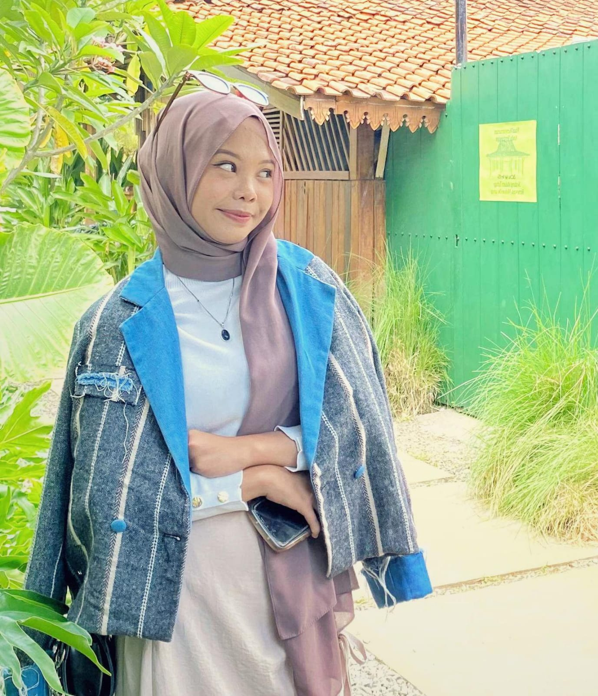
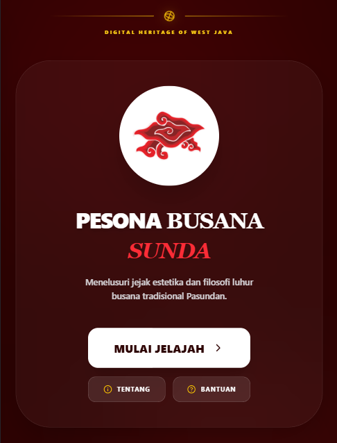
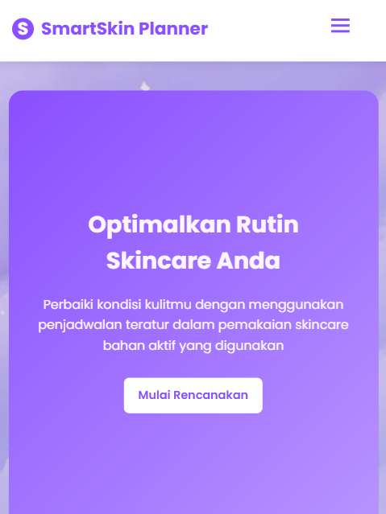
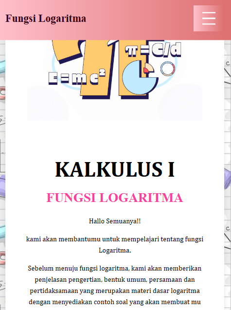
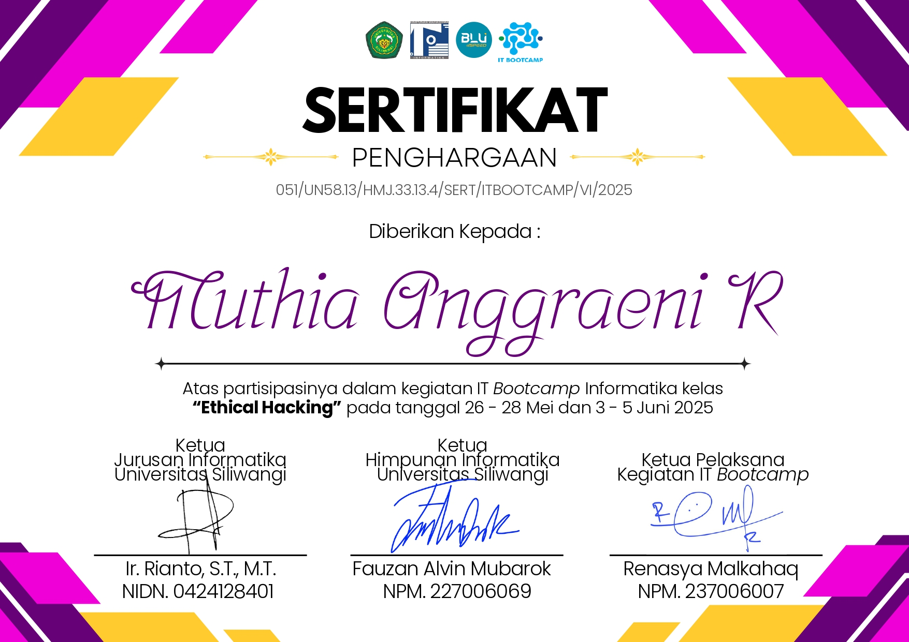

PORTOFOLIO
Seorang Mahasiswa Informatika dengan perjalanan eksplorasinya yang percaya eksperimen kecil adalah langkah menuju karya besar.
Hallo semuanya, nama saya Muthia! seorang mahasiswa Informatika semester 4 yang masih mengeksplorasi dunia teknologi yang begitu luas ini.
Mulai dari pengembangan aplikasi, design, hingga mengikuti bootcamp Ethical Hacking untuk mengatahui dunia keamanan siber. Menikmati setiap proses dan terbuka untuk mencoba hal-hal baru. Portofolio ini menjadi wadah untuk mendokumentasikan perjalanan belajar dan pengalaman saya di dunia informatika.
Membangun situs web yang cepat dan responsif.
Merancang alur sistem aplikasi dari sisi user flow, data flow, dan proses kerja aplikasi.
Menganalisis masalah secara sistematis untuk menemukan solusi yang efisien dan terstruktur.
Memecah masalah kompleks menjadi bagian-bagian logis yang dapat diimplementasikan dalam sistem.

Sebuah platform edukasi digital yang dirancang sendiri oleh saya untuk memperkenalkan ragam pakaian adat Jawa Barat. Aplikasi ini mengintegrasikan informasi sejarah, filosofi, dan elemen visual busana Sunda, hingga simulasi memadukan kain guna meningkatkan kesadaran budaya di era digital.
Kunjungi Situs
SmartSkin Planner adalah website perencanaan rutinitas skincare yang dirancang untuk membantu pengguna mengatur perawatan kulit secara lebih teratur dan efisien. Website ini memudahkan pengguna dalam menyusun jadwal penggunaan produk skincare berbahan aktif agar perawatan dapat dilakukan secara konsisten dan optimal. Proyek ini dikembangkan sebagai proyek kelompok, di mana saya berkontribusi dalam pengembangan sistem dan implementasi fitur aplikasi.
Kunjungi Situs
Website edukasi yang dikembangkan secara kolaboratif dalam tim untuk membantu mahasiswa memahami materi fungsi logaritma pada mata kuliah Kalkulus I. Platform ini menyediakan penjelasan konsep dasar logaritma, bentuk umum, persamaan, dan pertidaksamaan, dilengkapi dengan contoh soal sebagai pendukung pembelajaran. Website ini juga memiliki fitur kalkulator logaritma interaktif sebagai alat bantu belajar.
Kunjungi Situs
Pelatihan keamanan siber yang mencakup materi dasar ethical hacking dan praktik langsung melalui platform PicoCTF. Kegiatan ini melatih pemahaman konsep keamanan sistem, analisis celah keamanan, serta problem solving berbasis challenge keamanan siber melalui simulasi Capture The Flag (CTF).
Lihat Sertifikat